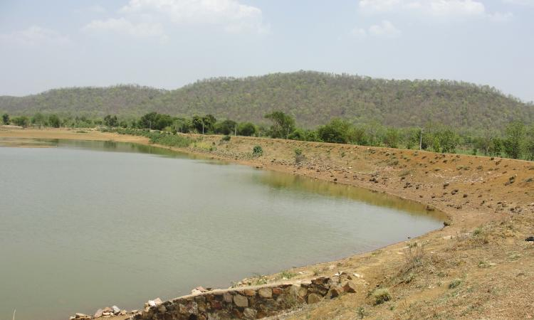

The capturing and storing of rainwater goes back thousands of years to when we first started to farm the land and needed to find new ways of irrigating crops. In hotter climes, catching that intermittent rainfall often meant the difference between life and death for communities. Whilst the need to conserve water fell away with greater urbanisation in the last thousand years, we are once again returning to this ancient and vital part of greener living.
Rainwater harvesting in ancient times: Civilisations in the Indus Valley were far more advanced than we may think nowadays. In many of the ancient cities that still remain, we can still find huge vats that were cut into the rock to collect water when there was torrential rainfall. These were used to keep the population and local vegetation going in hotter, dryer times and were fed by numerous stone gullies that weaved their way through the city. Some of these rock vats are still used today in parts of India.
Another technique that has been used for hundreds of years in India is to build water harvesting systems on top of the roofs of houses. It's a simple technology that has spread across the world, particularly to countries such as Brazil and China
The technology of rainwater harvesting is deeply rooted in the social fabric of India with a variety of ancient methods still found today. These include:
Talibs: Medium to large sized reservoirs that provide irrigation for plants as well as drinking.
Johads: Dams that are used to capture and keep rainwater.
Baoris: Wells dug into the ground that are often still used for drinking.
Jhalaras: Specially constructed tanks that are used for the local community and religious purposes.
The Romans and rainwater harvesting: During the time of the Roman Empire, rainwater collection became something of an art and science, with many new cities incorporating state of the art technology for the time. The Romans were masters at these new developments and great progress was made right up until the 6th Century AD and the rule of Emperor Caesar.

One of the most impressive rainwater harvesting constructions can be found in Istanbul in the Sunken Palace which was used to collect rainwater from the streets above. It's so large that you can sail around it in a boat.
Later rainwater harvesting: In the 17th Century the small island of Malta built an aqueduct to collect rainwater for its growing population. It was a popular way of getting water to the people but as new methods of building houses and supplying water improved with things like water pipes and reservoirs, the technology of rainwater harvesting stalled over the following centuries.
The other thing that stopped using collected rainwater for many towns and cities was also the prospect of spreading disease. The Sunken Palace in Istanbul stopped using the water for drinking many hundreds of years ago and the caches that Arab tribes kept across desert lands have mainly fallen into disuse. With increased urbanisation, the need for effective rainwater catchment hasn't been a major concern except in countries where the climate dictates it and water is in short supply.
Modern Rainwater Harvesting: Go into any gardening store in the US and you will no doubt be able to see various plastic butts that are designed to collect rainwater so that we can water our gardens and keep the plants in good health during any dry period. There's no doubt that climate change has got us thinking about water conservation again, especially with the supply companies beginning to put their prices up. The general consensus is that letting all that rainwater go to waste is no longer acceptable. It can be collected and that can help reduce water bills. In other words, is not only a good idea ecologically, it makes sense financially.
Recycled water can be used for a variety of daily tasks from washing clothes, flushing toilets and even cleaning the car. With the possibility that we could face more prolonged drier periods in the near future, the onus is on us all to conserve what we consume and make the most of what comes to us free of charge from the sky.
Rainwater harvesting across the world: While we may be some way behind in our rainwater recycling, the rest of the world has been embracing it more and more in recent years. Many in the US argue that houses should have an underground tank that can be used to collect rainwater for various washing tasks. Most new builds in China and Brazil now incorporate rooftop rainwater harvesting technology whilst many countries are making it law to be greener when it comes to our most vital commodity.
In many states in the US, until recently, rainwater harvesting was actively discouraged but new legislation is beginning to come in to make it possible for individual houses to incorporate the technology to save water for their homes.
In Israel, they are beginning to install rainwater harvesting devices in schools as a way of teaching kids the value of water conservation and in South Africa research is well under way to find new ways of employing catchment technology.
The future of rainwater harvesting appears to be in fairly good shape and the great thing is that many modern systems can be installed with a minimum of effort.